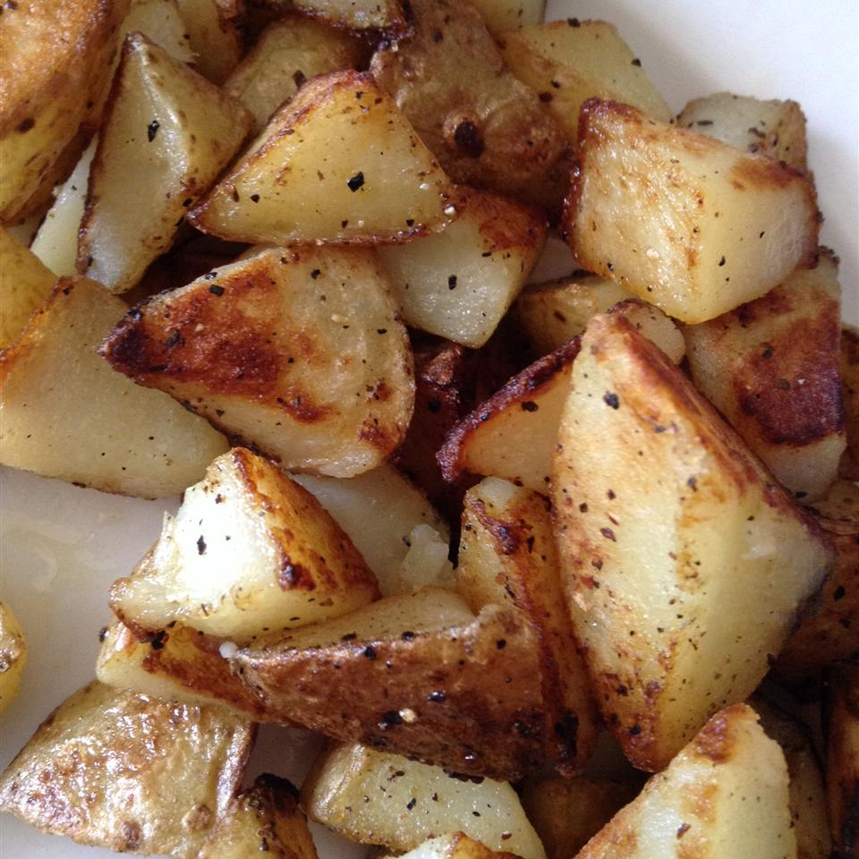

Home Fries

Description
Pan-fried potatoes are a classic. Simple and easy.
Ingredients
- 3 medium russet potatoes
- 3 tablespoons butter
- Salt and pepper
Directions
- Cut potato into cubes
- Rinse cubed potatoes in cold water and drain well
- Melt butter in appropriately-sized skillet over medium heat
- Dump potatoes in skillet, and stir to coat with butter. Add salt & pepper
- Cover with lid and cook for 10 minutes
- Cook for 10 more minutes uncovered, turning often until crisp on all sides
Home